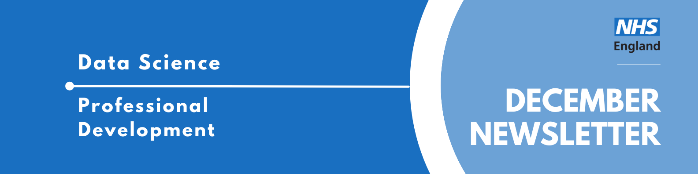
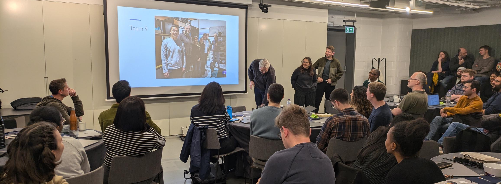

Data Science Community for Health and Care Newsletter December 2024

Welcome to the latest newsletter from the Data Science Community for Health and Care, brought to you by the NHS England Data Science Professional Development Functional Team.
The newsletter team are always happy to receive constructive feedback, and we invite you to send us any contributions you may have.
If you cannot access something of interest to you, please reach out.
Thanks for reading! – newsletter team
Microsoft Hack

The NHS England Data Science team, as well as a range of other analysts from across the organisation, attended an AI Hackathon at Microsoft, organised by the Data Science Team together with Microsoft and Kainos, with the key stakeholders being the NHS Websites Services Team. In this article, the author shares her experiences at the event.
Last week, the long awaited Hack for Health hosted at the beautiful Story Club, in Paddington London, by Microsoft and NHSE finally happened! At the hackathon, every team had either a Kainos or Microsoft representative, as well as a range of participants from across NHS England, including a strong Data Science Team presence, with several of our team members in each group. And unlike a usual hackathon, this one had stakeholders and well defined use cases, we were all working to one common goal.
Christmas Challenges
GCHQ Christmas Challenge
GCHQ have released their annual Christmas Challenge. While aimed at children aged 11-18 we had a great time puzzling this one out during a morning Christmas meeting - perfect for a family Christmas quiz night!
RSS Christmas Quiz + Puzzles
The Royal Statistical Society have published their Christmas quiz and puzzles. There are even prizes for answering - the top three entries received by the deadline (20:00 Sunday 5th January 2025) will receive a donation of up to £150 to a charity of good cause of their choice.
The Section A quiz questions can be found here, while the Section B puzzles can be found in PDF format here on linked on their own site: thexmaspuzzles.com.
Note: This site may not be accessible through work laptops
BBC Bitesize: AI or real? Christmas edition!
Artificial intelligence is already very impressive, with many AI images and videos so flawless that it can be difficult to tell what’s fake and what’s real. But as it continues to develop, will this become an impossible task?
Challenge yourself with this Christmas edition of AI or real!
Christmas Crossword
Love crosswords? Love Machine Learning and AI? Last year Ivan Reznikov published a Christmas Data Science Crossword Puzzle.
Your family will love solving this together after Christmas dinner and definitely not throw wrapping paper at your head!
RPySOC: Relive the experience
As mentined in last month’s newsletter, the RPySOC conference was hosted, bringing together enthusiasts of all things R, Python and Open Source software from all over the country. In the spirit of things being open and freely available, the talks and slides have been made available to you all to watch in your own time!
Resources
For some, the festive period can allow a little bit of a reprieve from projects and meetings: the perfect time to do that training you always wanted to do but never had the time for. Consider blocking out some time for yourself to hit your learning goals!
Intro to Coding
The team have been busy updating the resources page of the FutureNHS site (free account required to access), including a new section full of resources on how to get started with Python.
There are so many great resources to get you started on a data science journey.
Intro to LLMs
Sam and Adam Hollings have a public repository which will walk you through some simple LLM implementations. It uses free software and can all be run inside Google Collab, for maximum accessibility. It could not be easier to start learning about this essential area of data science!
Check out our collection of training resources in the Resources Section! Can you spot something missing? Contact us!